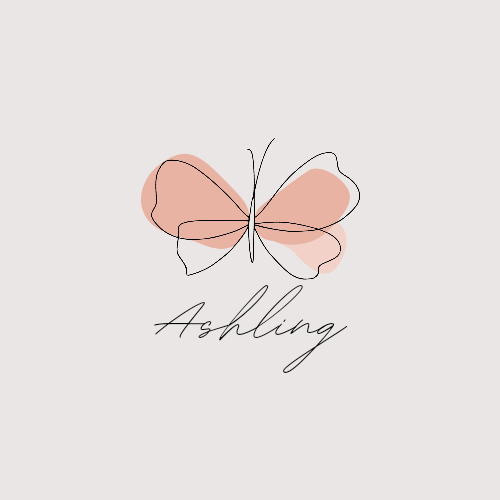
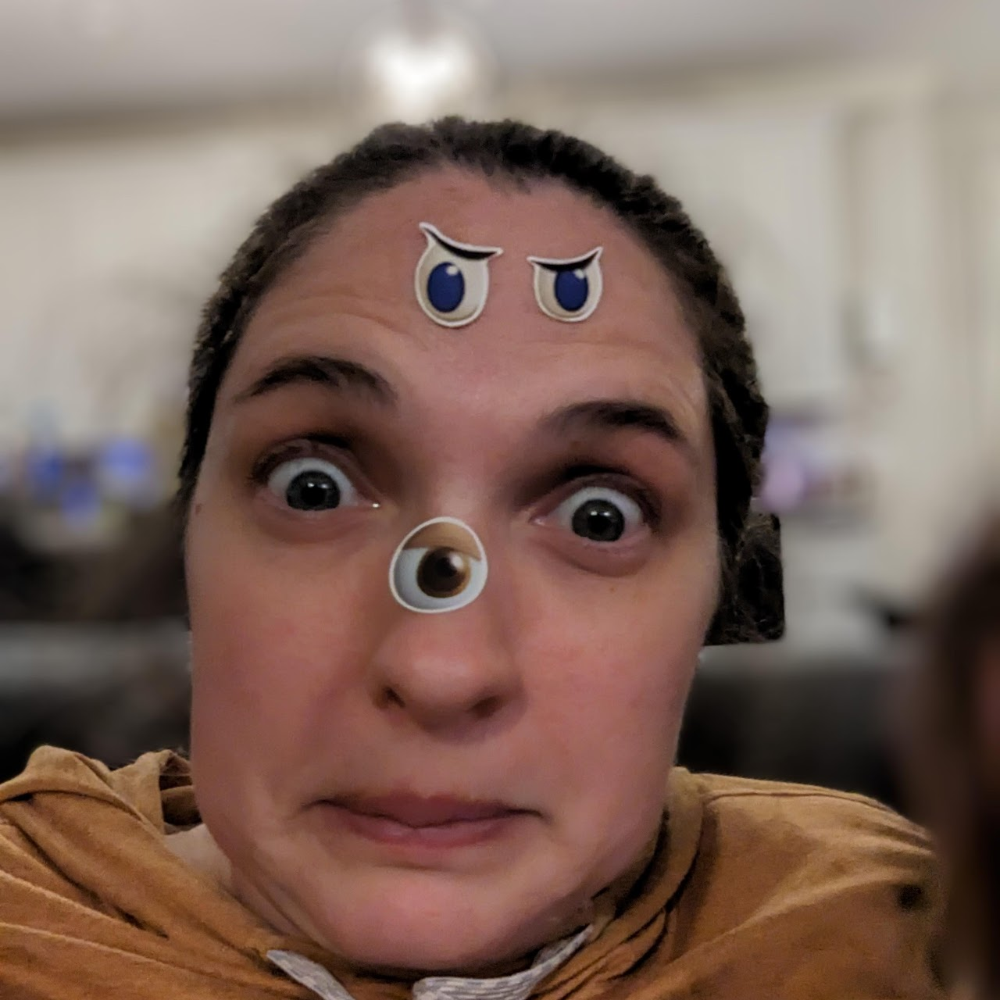
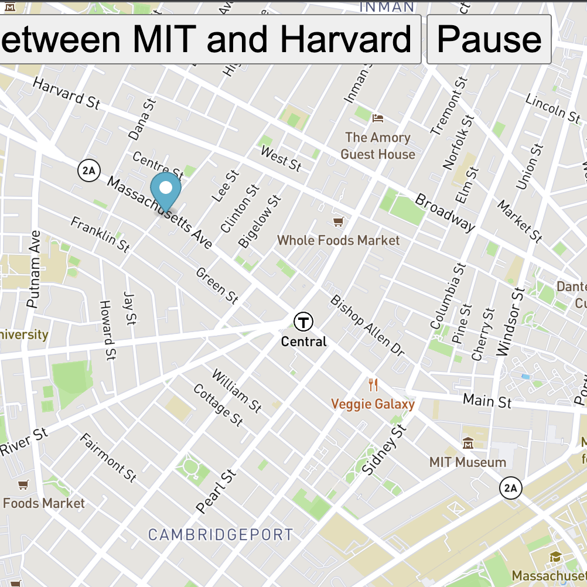
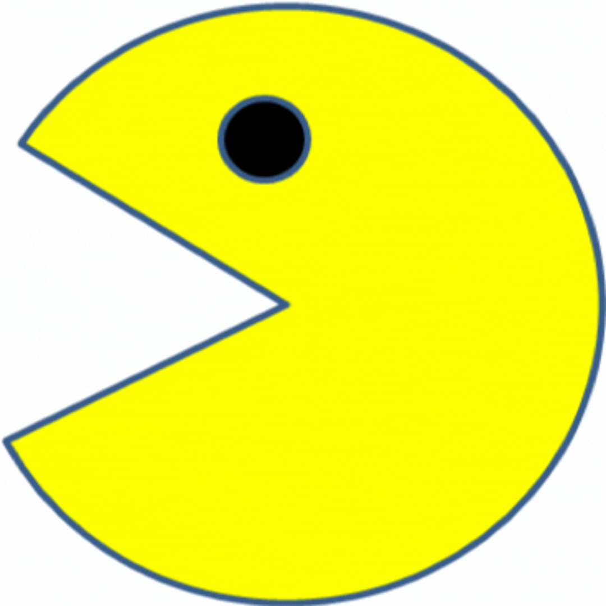

<!DOCTYPE html>
<html lang="en">
<head>
<!-- bootstrap 3 -->
 <title>Bootstrap Project</title>
 <meta charset="utf-8">
 <meta name="viewport" content="width=device-width, initial-scale=1">
 <link rel="stylesheet" href="https://maxcdn.bootstrapcdn.com/bootstrap/3.4.1/css/bootstrap.min.css">
 <script src="https://ajax.googleapis.com/ajax/libs/jquery/3.6.1/jquery.min.js"></script>
 <script src="https://maxcdn.bootstrapcdn.com/bootstrap/3.4.1/js/bootstrap.min.js"></script>
 <style>

 <!-- top Nav color #eccfcf -->
  <!-- Image and text -->
  <a class="navbar-brand" href="www.Astruve.com">
    
    Ashling's Bootstrap Portfolio
  <nav class="navbar navbar-expand-lg navbar-light bg-light" style="background-color: #eccfcf>
  <a class="navbar-brand" href="AshlingButterfly.png">Navbar</a>
  <button class="navbar-toggler" type="button" data-toggle="collapse" data-target="#navbarNavAltMarkup" aria-controls="navbarNavAltMarkup" aria-expanded="false" aria-label="Toggle navigation">
    <span class="navbar-toggler-icon"></span>
  </button>
  <div class="collapse navbar-collapse" id="navbarNavAltMarkup">
    <div class="navbar-nav">
      <a class="nav-item nav-link active" href="http://www.astruve.com">Home<span class="sr-only">(current)</span></a>
      <a class="nav-item nav-link" href="https://ashlingnlog.github.io/about/">About</a>
      <a class="nav-item nav-link" href="https://www.astruve.com/home/full-stack-developer">Projects</a>
      <a class="nav-item nav-link disabled" href="#" tabindex="-1" aria-disabled="true">Disabled</a>
    </div>
  </div>
</nav>

<!-- Intro -->
<div class="jumbotron">
  <div class="container text-center">
    <h1>My Portfolio Bootstrap Project</h1>      
    <p>Allow me to introduce myself, I am a self-proclaimed world traveler, pun-lover, solo mom, certified makeup artist, technophile, shutterbug, craft dabbler, and fitness fanatic; always seeking improvement. After over 7 years of experience in project management, administrative assistance, and operations I am challenging myself in new ways by becoming certified as a full-stack MERN developer with MIT xPro's women's cohort.
       <br>I have many hats.</p>
  </div>
</div>
<!-- Containers for Portrait & video to keep centered-->
<div class="container text-center">
  <div class="row">
    <div class="col">
   <!-- Portrait-->
<figure class="figure">
  
  <figcaption class="figure-caption text-end">It's me. Hi!</figcaption>
  <br>
</figure>
    </div>
    <div class="col">
   <!-- embbeded youtube video -->
   <div class- center>
    <p><iframe width="560" height="315" src="https://www.youtube.com/embed/2IhVKhOhfcc" title="YouTube video player" frameborder="0" allow="accelerometer; autoplay; clipboard-write; encrypted-media; gyroscope; picture-in-picture" allowfullscreen></iframe></p>
  </div>
    <hr>
</div>
<br>
</div>
    </div>
  </div>
</div> 

<!-- Projects -->
<div class="d-flex flex-row mb-3 text-center">
  <h3>Class Projects</h3>
  <div class="row">
        <div class="col-sm-4">
          <div class="p-2">Eyes Excersise</div>
          
        </div>
        <div class="col-sm-4"> 
          <div class="p-2">Real Time Bus</div>
          
        </div>
        <div class="col-sm-4"> 
          <div class="p-2">PacMen</div>
          
        </div>
    </div>
  </div>
</div>
<br>
<!-- Calendly inline widget begin -->
<div class="calendly-inline-widget" data-url="https://calendly.com/astruve/30min?primary_color=66d8c6" style="min-width:320px;height:630px;"></div>
<script type="text/javascript" src="https://assets.calendly.com/assets/external/widget.js" async></script>
<!-- Calendly inline widget end -->
<br>

<!-- footer with contact -->
<footer class="container-fluid text-center">
  <p> Made by Ashling Struve for MIT xPro Women's Cohort
  <p> <a href="mailto:AshlingStruve85@gmail.com"> Contact Me </p>
</footer>
</body>
</html>
